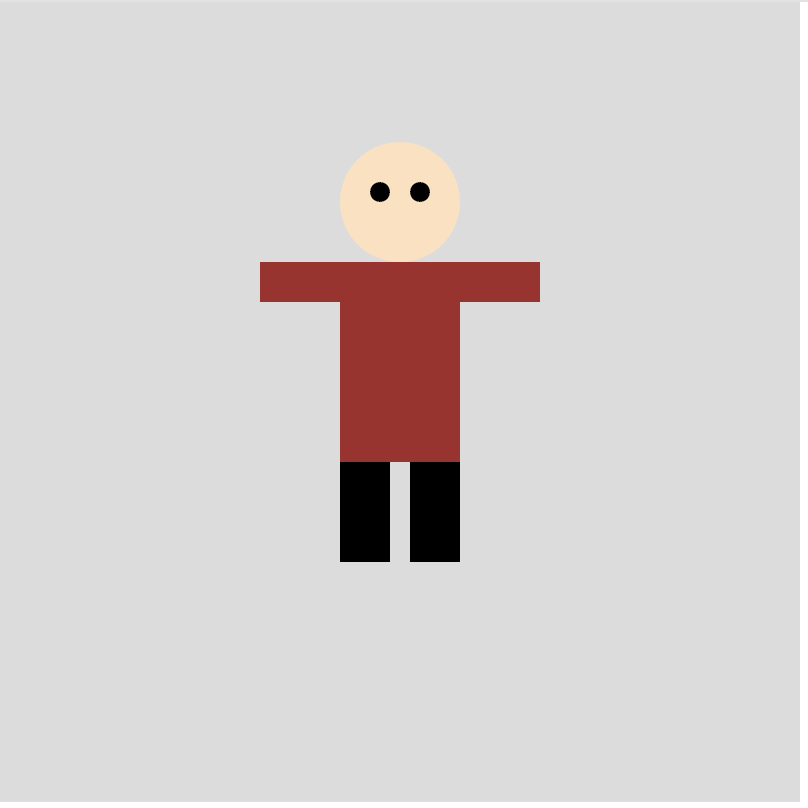

In this week's class we explored the use of mirrors in interaction design and some of the failures of computer vision.
We also learnt about the different applications of images to create generative art in processing.

This is a portrait of the people site beside me that I drew using p5.js code to generate geometric shapes.
The activity that impressed me the most was forming pictures out of random round blocks of colour of varying sizes.
I chose the photo of a cute pet mouse as the template.
As you can see from the video on the left, the size of the dot gets smaller as the mouse moves to the left, and larger conversely,
and the picture gets clearer and clearer as time goes on.